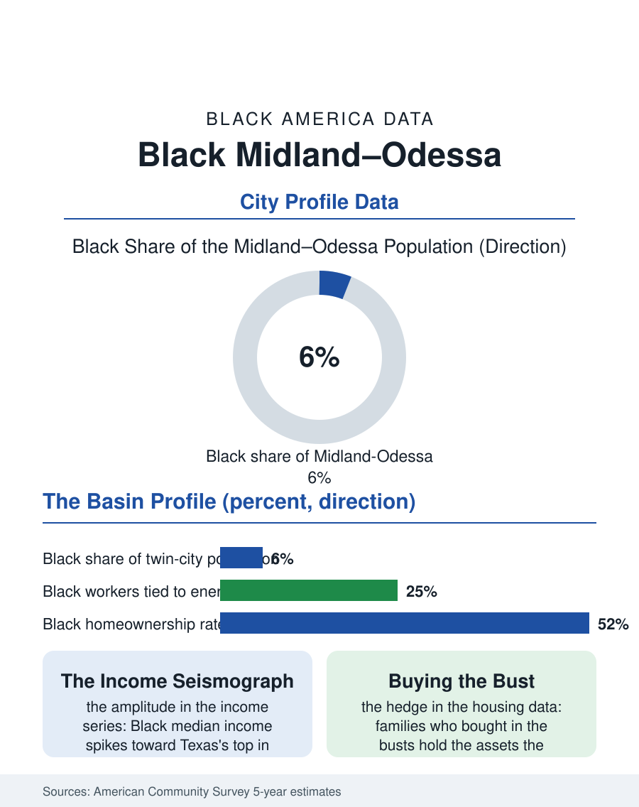

Black Cities
Rig Lights: Black Midland and Odessa
The Permian Basin's Black community of twenty-two thousand rides the oil cycle's full amplitude, booming without apology and busting without leaving. The Permian file.

Midland and Odessa, the Permian Basin's twin cities, hold a combined Black population on the order of twenty-two thousand across a metro of some three hundred forty thousand, roughly six percent, in the most volatile economy in this atlas: the American oil patch. The census counts a community assembled almost entirely by petroleum, booming and busting with the rig count, and rooted in Odessa's south side and Midland's east side through a century of cycles. This article reads the Permian file.
Built by the Boom
Black settlement in the basin followed the oil discoveries of the 1920s and the labor demand of the fields: roughnecks, truck drivers, cooks, and domestics arriving from East Texas and Louisiana into towns that were barely a decade old, segregated by custom into the districts whose names the community still uses. The postwar booms industrialized the pattern, the field-service companies, the pipeline contractors, and the refineries of the basin hiring Black workers into the best blue-collar wages in the state's Black economy, while Midland's corporate towers, the oil companies' Permian headquarters, built a smaller professional layer, geologists, landmen, accountants, nearly all of whom commuted socially to Odessa's community institutions, since Midland's Black population was always the thinner of the two. The churches and the segregated schools, Ector in Odessa and Carver in Midland, organized the community's life, and the busts, above all the 1980s collapse that halved the basin's economy, tested it: the survey record shows the Black population dipping with each bust and recovering with each boom, a resilience purchased by the homeowner base the boom wages bought in the good years and by the public employment, schools, hospitals, county, that does not evaporate with the crude price.
The Numbers Ride the Rig Count
The American Community Survey's Permian profile is a study in variance. In boom cycles, Black median household income in the basin spikes toward the top of the Texas table, oilfield wages lifting the whole distribution; in busts it falls back as fast, with unemployment in the energy-adjacent trades spiking accordingly. No other community file in this atlas has an income series with this amplitude, and it shapes everything the survey measures: housing built in surges and strained in all of them, since boom rents in the basin have repeatedly priced service workers out of the towns they serve, the man-camp and RV economy absorbing the overflow; schools enrolling and shedding students by the thousand between cycles; and a population count that is less a trend than a wave, the demographers' models chasing the rig count a year behind. Homeownership presents the cycle's hedge, the families who bought in the busts holding assets the booms reprice upward, so that the basin's Black wealth, such as the surveys catch it, is disproportionately housed in the very real estate the next bust will test. The health file carries the occupational residue: oilfield injury rates, the highway deaths on the basin's lethal service roads, and the boomtown social stresses the public health data record in the emergency rooms of both cities.
Two Cities, One Community
The twin cities' rivalry is the region's sport, but the Black community's geography ignores the county line: Odessa holds the majority and the institutional depth, the churches, the Ector tradition, the community's political base in its city and school politics, while Midland's smaller community trades on proximity to the corporate economy and has produced its own leadership across the generations. The institutions that bind them are regional in the basin's style: the Juneteenth celebration drawing from both cities and the oil camps, the alumni networks of the two segregated schools, and the Divine Nine chapters at the University of Texas Permian Basin in Odessa, the campus whose growth has given the community a young professional anchor neither city had a generation ago. The forward file is the energy transition's Texas chapter: the basin will produce oil for decades on every credible forecast, but the employment per barrel keeps falling to automation, and the community's hedge, visible in the survey's occupational drift, is the diversification into the hospital systems, the university, and the logistics economy that the booms financed. The Permian file closes with the rig lights on the horizon at dusk, the basin's eternal wallpaper. Black West Texans have read their fortunes by those lights for a hundred years, in a community that booms without apology and busts without leaving, which is, in the end, the oil patch's own definition of home.
More in Black Cities
Black Atlanta: Population, Distribution, and Growth of a Black Metropolis
Metro Atlanta holds more than two million Black residents — roughly one in three, second only to New York. The suburban distribution, migration history, and composition of Black Atlanta in the census data.
Black New York: The Largest Black Population in America
The New York metropolitan area holds about 3.4 million Black residents — more than any metro in the nation — and the city itself about two million. The census profile.
Black Washington: The District and the Metro
The Washington metro holds about 1.6 million Black residents, and the District itself — long a majority-Black city — now records a Black share near 41 percent. The census profile.
Source: U.S. Census Bureau, American Community Survey 5-year estimates for the Midland and Odessa, TX metropolitan areas; Texas energy economy data.